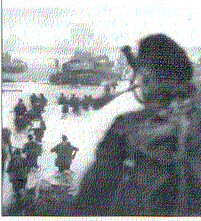

Restoration of the Lovat estate (1774)
Fhuair Mac Shimi'n oighreachd
Tune
Captain Simon Fraser's Collection N°68 (first published 1816)
(Sequenced by Christian Souchon)


|
In 1745, Lord Lovat had participated in an uprising against the Crown and was therefore sentenced to death. He was beheaded on Tower Hill in London, becoming the last man to die in this manner. His titles, furthermore, were forfeit.
His son, SIMON FRASER, Master of Lovat (1726-1782), was a soldier, who at the beginning of the Seven Years War raised a corps of Fraser Highlanders for the English service, and at the outbreak of the American War of Independence raised another regiment which took a prominent part in it. He fought under Wolfe in Canada, and also in Portugal, and rose to be a British major-general. The family estates were restored to him in 1774 , (but the title was not revived till 1837).
Later, in 1837, Thomas Fraser of Strichen, who would have succeeded to the title but for the forfeiture, was created Baron Lovat in the Peerage of the United Kingdom. In 1857, the attainder of the eleventh Lord was reversed, so Thomas Fraser became the twelfth Lord Lovat. The 17th Lord Lovat, also Simon, was described by Churchill -who quoted Byron- in 1944 as 'the mildest mannered man that ever scuttled ships or cut a throat'. When World War II broke out he led a unit titled the "Lovat Scouts". After Dunkirk he formed the Special Services Brigade, the commandos. At dawn of 6 June 1944, on D-Day he landed his 4th Commando on Sword Beach, beside him his piper, William Millin. To the skirl of 'Highland Laddie' he led his green-bereted men through fierce fire to relieve the 6th DA at Pegasus Bridge on the Orne canal. To mark that the task was fulfilled, Millin played another Jacobite song, 'Blue Bonnets over the Border' . In the 1960s epic movie, The Longest Day, Peter Lawford played Lovat. |
En 1745, Lord Lovat avait participé à un soulèvement contre la Couronne et été pour cette raison condamné à mort. Il fut décapité à la Tour de Londres, devenant le dernier homme à être exécuté de cette manière. De plus ses titres furent confisqués.
Son fils, SIMON FRASER, Maître de Lovat (1726-1782), fut un soldat qui, au début de la guerre de Sept Ans leva une compagnie de Highlanders du Clan Fraser au service de l'Angleterre et lorsque éclata la guerre d'indépendance américaine, il constitua un autre régiment qui joua un role important. Il combattit au Canada sous les ordres de Wolfe ainsi qu'au Portugal et finit sa carrière comme général-major de l'armée britannique. Le domaine familial lui fut restitué en 1774 , (mais le titre de Lord resta confisqué jusqu'en 1837). Le collecteur de chants, le Capitaine Simon Fraser note ceci: "La restitution du domaine des Lovat et des autres terres confisquées en 1745 donna naissance à un "air" exprimant la joie des habitants de voir revenir leurs anciens maîtres et disparaître la tyrannie exercée par certains intendants des commissaires du Roi." Plus tard, en 1837, Thomas Fraser of Strichen, à qui aurait du échoir le titre, n'eût été leur confiscation, fut créé Baron Lovat, Pair du Royaume Uni. En 1857, la déchéance du 11ième Lord fut annulée, si bien que Thomas Fraser devint le douzième Lord Lovat. Le 17ème Lord Lovat, un Simon également, était, au dire de Churchill citant Byron en 1944, 'l'homme le plus affable qui ait jamais sabordé un navire ou tranché une gorge'. Quand éclata la seconde guerre mondiale, il commandait une unité portant le nom d''Eclaireurs de Lovat'. Après Dunkerque il constitua la Brigade de missions spéciales, (Commandos). A l'aube du 6 juin 1944, le jour J, il débarqua avec son 4ème Commando à la tête de plage "Sword", accompagné de son sonneur, William Millin. Aux accents de 'Highland Laddie' il alla avec ses bérets verts, au milieu d'un feu nourri, relever la 6ème DA au Pont de Bénouville, rebaptisé "Pegasus Bridge". Pour signaler que la mission était accomplie, Millin entonna un autre chant Jacobite, 'Blue Bonnets over the Border' . Dans le film de 1960, "Le jour le plus long", Peter Lawford jouait le rôle de Lovat. |